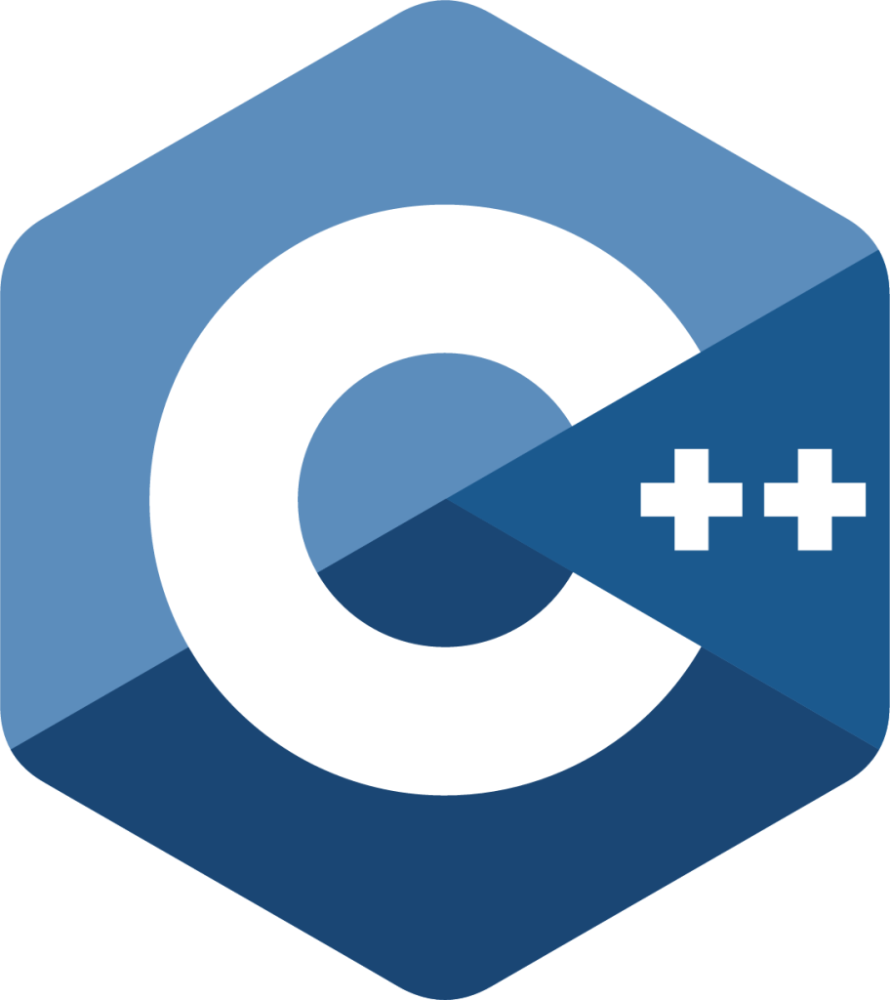
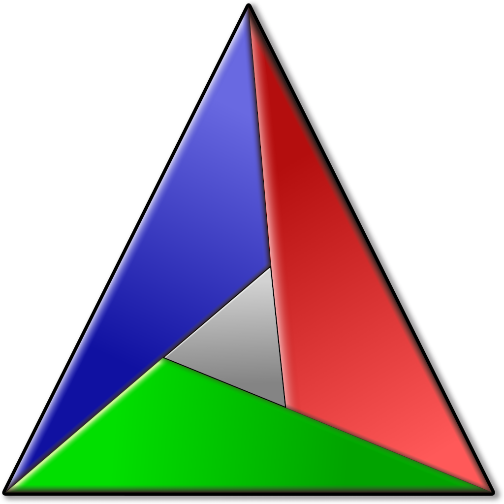
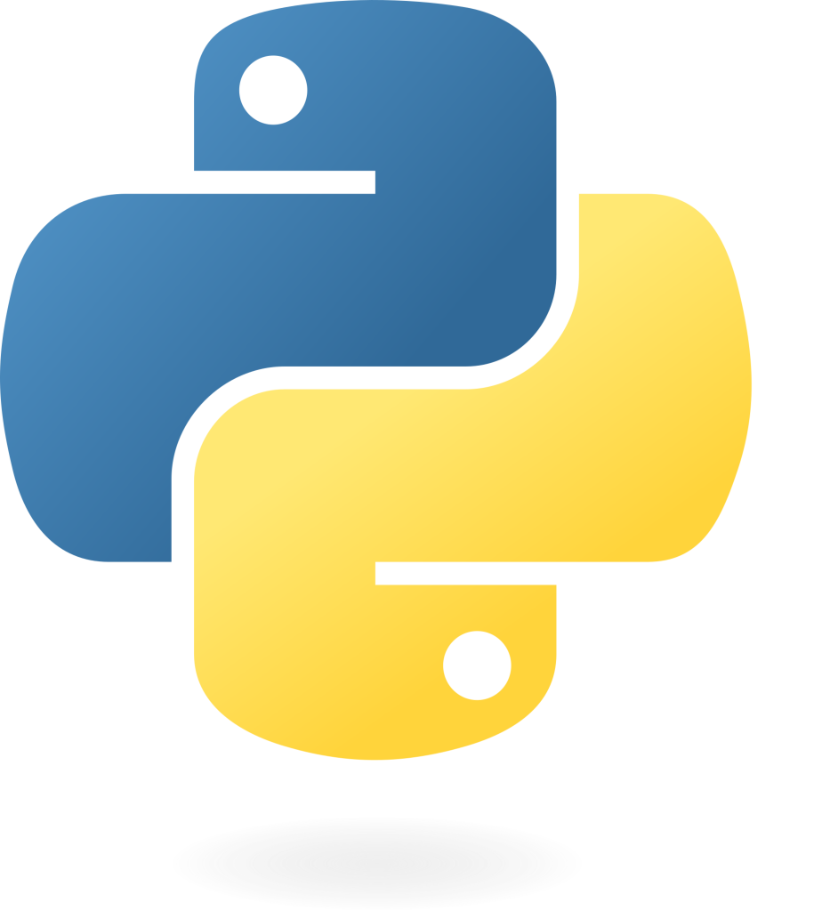

Hello and welcome to my ePortfolio! My name is Mason Shaner, and I am about to graduate with a Bachelor of Science in Computer Science. I created this ePortfolio as part of my capstone course, CS-499. It consists of several artifacts from the courses I took during my degree, along with personal projects that demonstrate the skills and knowledge I gained throughout my studies.
Throughout my studies, I have gained experience in every aspect of the software development lifecycle. I have interviewed stakeholders to gather requirements and conducted systems analysis and design for a complex learning management system (LMS). Additionally, I have implemented software solutions that address real-world problems, using best practices and industry standards for style and performance. Notable examples include the Travlr full-stack web application and the Shaper3D model viewer application. I have also analyzed the performance of algorithms and data structures to select the most efficient solutions for specific problems, as demonstrated in the lookup table C++ class included in this ePortfolio.
I have learned the theory behind both relational and non-relational databases, and I have gained hands-on experience crafting schemas, normalizing databases, writing complex queries, and developing backend applications with several common database systems, including MySQL, SQLite, and MongoDB. Throughout my studies, there has been a consistent emphasis on security and code quality. I have learned about various vulnerabilities that affect modern applications, such as SQL injection, buffer overflows, integer overflow and wrapping, and format strings, as well as how to avoid these vulnerabilities through secure coding techniques and adherence to secure coding standards.
During my time in the computer science program, I have been exposed to many different technologies. However, I have particularly enjoyed the courses that utilized the C++ programming language. Through these courses and my personal projects, I have developed a strong desire to pursue professional opportunities that involve C++. Consequently, all the artifacts included in this ePortfolio utilize C++ as the primary programming language. Additionally, I chose to showcase projects that leverage C++ in domains where it is considered the standard language, such as graphics and systems programming.
The first artifact in my portfolio, Shaper3D, is a 3D model viewing application originally developed during CS-330 Computational Graphics. The application uses the OpenGL graphics API, the Dear ImGui framework, and a SQLite database. Although the original artifact was created during CS-330, the version included in this ePortfolio is enhanced with a sophisticated GUI and database authentication. The second artifact is a C++ lookup table class, originally part of a personal project whose link is provided in the ePortfolio. This artifact was enhanced by improving the performance of the linear interpolation algorithm using a branchless binary search. Both enhanced artifacts were specifically developed for this ePortfolio during my capstone course in the computer science program.

C++
C

Cmake

Python
Projects
CS-499 Code Review
This code review was conducted as part of my capstone project for my Computer Science degree.
Shaper3D
The first artifact I enhanced from my courses is a desktop application that uses the OpenGL graphics API and the C++ programming language to render a 3D scene containing primitive shapes like cylinders, cubes, and pyramids in a GLFW window. The user can navigate the scene using the WASD keys together with the mouse to translate and pan the camera. The meshes in the scene are also textured using images and materials that define their lighting properties. This 3D application was the final project in the course CS-330 Computational Graphics and Visualization. I have called the enhanced version of the 3d application Shaper3D.
I chose this artifact to include in my ePortfolio for several reasons. Firstly, my specialization within computer science and software engineering is C++ programming, and one of the main uses for C++ in the field is graphics programming and game development. As such, I believe having an artifact in my portfolio that demonstrates skills in these areas could help when applying to these types of jobs. For instance, many companies in the industry have built their applications on the OpenGL graphics API, and writing a full 3d application from scratch that uses this API demonstrates my understanding of the technology and 3d graphics in general.
Similarly, because it is entirely written in C++, the 3D scene application also provides examples of my knowledge and skill with language and techniques like object-oriented programming and C++ best practices. I also chose this artifact because it provides a good platform for enhancement. In its initial state, all the application was capable of was rendering a simple 3d scene. However, now, with the enhancements in place, it is much more similar to a typical 3d model viewer with a styled user interface (UI) and controls for the different mesh objects in the scene. Adding these elements to the program allowed me to demonstrate my skills in designing and implementing new features within an existing codebase, which is one of the core skills required in the industry.
The enhancement plan for the 3d application was to add a UI using the ImGui framework. ImGui is the most popular UI framework for C++ applications and is used in many game engines and 3d modeling/CAD software because of its cross-platform support and excellent capabilities. Thus, my goal for the enhancement was to add a custom-styled ImGui UI that would allow me to log into the application and manipulate 3d meshes and their properties. This task required careful planning and design as integrating an immediate-mode UI like ImGui into an application requires fundamental changes to the app's rendering flow and user input processing.
From the outset, I had to decide how to integrate the ImGui framework into the application. ImGui is generally built into a static library and linked to the project. However, the original application project was only set up for the Visual Studio IDE, which limits the cross-platform compatibility of the project. Thus, I made the decision to refactor the project to use CMake as the build system. With CMake, adding the ImGui framework or any other external libraries and building them either as static or dynamic libraries is trivial and cross-platform compatible, unlike using Visual Studio. While I have worked with CMake in the past, setting up this project's build system was the most complex CMake project I have done yet, and I learned a great deal about how this industry standard tool works and what the best practices are for creating clean cross-platform build systems.
With the build system configured and ImGui integrated, I then began the process of creating the various ImGui windows I would need for the application UI. During this process, I learned much more about the ImGui framework, including how to use custom colors, styles, and fonts in different parts of the application. While I have used ImGui extensively in the past, I have never changed the styles or colors from the defaults provided in the ImGui context. I also learned how to implement the model-view-controller design pattern in C++ while implementing the various login and mesh views in the UI. Implementing this design pattern in C++ was somewhat different from my previous experience with the pattern in typescript. I also gained experience with manipulating the position of ImGui widgets by calculating window sizes and positioning the cursor prior to drawing. This was also a new skill to me, as my previous work with ImGui had not altered the default alignment or size of the widgets.
One challenge that arose during the enhancement was how to separate the ImGui core rendering methods from the frontend ImGui code contained in the view class. Initially, I was passing a function pointer to the view function to the backend for rendering. However, this complicated the process of passing parameters to the view functions like mesh objects. Thus, I had to refactor the ImGui rendering backend class to split the rendering process into two stages: the first stage prepares the context and dock space for the draw call, and the second stage actually calls the ImGui render function. This rendering flow allows the frontend ImGui code to be contained within the view class and called between the two backend rendering functions, completely decoupling the rendering of an ImGui window from its implementation.
Overall, I have been successful in meeting all of the course outcomes I initially identified in the module one enhancement plan. I have implemented strategies for supporting users and diverse audiences by adding a high-value feature, in this case, an ImGui UI, to the application that enhances the user experience. I have also demonstrated the ability to use industry-standard tools and techniques like CMake, ImGui, and object-oriented programming. I have also created professional quality visual and written communication in the form of comments within the source code, diagrams including UML and flowcharts, and this narrative of the enhancement. I have also developed a security mindset by architecting the UI for security by utilizing the model-view-controller design pattern to separate database interactions from user input.
Fast and efficient Lookup Tables in C++
The second artifact I have included in the ePortfolio is a C++ class that implements the functionality of a lookup table. Lookup tables are essential data structures commonly used in simulations, where quick access to values in large datasets is necessary. One practical example is the lift coefficient of an airplane as a function of its airspeed. In this lookup table, the x array would represent the airspeed, while the y array would contain the corresponding lift coefficients. The lift coefficient can then be interpolated from the data using the standard linear interpolation formula based on the current airspeed.
This functionality was implemented in a C++ class during a personal project that created a real-time flight dynamics model of a light aircraft. The lookup table allows users to store data in the two arrays, x and y, and retrieve a value by providing an input value, denoted as t. This input is used to linearly interpolate the result. However, the original linear interpolation algorithm employed a linear search to find the indices needed for interpolation. Linear search is not a very efficient algorithm, especially considering that many simulations require thousands of lookups in vast datasets every frame. Therefore, the goal of this enhancement was to improve the performance of the lookup table by using binary search to find the index required for interpolation.
I chose to include this artifact in my ePortfolio as it provided me with a good platform for demonstrating my ability to optimize the performance of a piece of software through the use of algorithmic analysis and knowledge of computer architecture. For example, one of the skills that I demonstrated in this enhancement was my ability to use the most efficient algorithm for the given purpose. I demonstrated this skill by identifying the linear search step's inefficient O(N) time complexity and selecting the much faster O(logN) binary search to replace it. I also demonstrated my skills in optimizing algorithms for performance with regard to the architecture of the computer. I demonstrated this skill by making the binary search algorithm branchless using bitwise operations, which allows faster loop iterations and avoids costly branch mispredictions. I also demonstrated this skill by converting the C++ class to a template class that uses arrays instead of std::vector, which keeps the lookup table data on the stack and allows for faster access.
The enhancement process began by first experimenting with the linear interpolation algorithm to see how it could be improved with binary search. At first, I implemented the traditional version of binary search that uses conditional statements to update the low and high indices. Once I verified that this approach worked, I began to look into other ways to make the algorithm faster. I have long known that conditional statements are slow because of branch prediction errors, but during my research for this enhancement, I was surprised to learn just how costly these errors can be. Thus, armed with my new knowledge of the inefficiencies of branch misprediction, I decided to attempt to make my binary search algorithm branchless.
There are several ways to implement a branchless binary search, but I decided to use bitwise operations as I have had some experience with these techniques when programming microcontrollers. In my implementation, the bitwise operations update the high and low indices depending on the value of a bitmask, which is either all zeroes or all ones, depending on whether the requested value is in the upper or lower partition of the array. During this process, I had to learn how to create a bitmask from a size_t type. While it sounds trivial, size_t is a signed integer type and thus uses the two's complement representation. Simply static casting an integer with value 1 will not result in 0xFFFF as 1 in two's complement is 0x0001. Instead, the value must be negated as -1 in two's complement is indeed 0xFFFF. With the linear interpolation algorithm now implemented with a branchless binary search, I then converted the LookupTable class to a template class that takes the type and size of the data as template arguments. The data in this class is stored in a std::array, allowing for fast stack memory lookups.
I have been successful in meeting all of the course outcomes I initially identified in the module one enhancement plan. I have designed and evaluated computing solutions that solve a given problem using algorithmic principles and computer science practices and standards. I achieved this course outcome by using algorithmic analysis and principles to improve the performance of the linear interpolation algorithm by implementing a faster search algorithm. I have implemented strategies for supporting users and diverse audiences by demonstrating how strategies can be employed to ensure that building or adding features to an application, such as improving the efficiency of a program by implementing a faster algorithm, is maximally beneficial for all of the stakeholders involved.
I have also demonstrated the ability to use industry-standard tools and techniques by utilizing industry-standard techniques like object-oriented programming and C++ templates to ensure that the enhanced lookup table class delivers maximum value. I have also created professional quality visual and written communication by including a detailed description, in the form of comments in the header file of the enhanced lookup table class, that explains to users of the lookup table class how the linear interpolation algorithm has been improved using branchless binary search and what type of performance gains can be expected over the traditional algorithm.